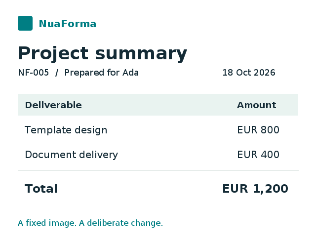

Compare deliberately
Compare both color and transparency. Set per-pixel tolerance separately from the percentage of changed pixels you allow. A size mismatch stays a mismatch.


A STANDALONE NUAFORMA PROJECT
Compare a reference image with a new result. Find changed pixels, highlight the affected regions, and turn unexpected differences into failing tests.
For your tests, your tools and your images. No document generator required.
EXPECTED → ACTUAL → DIFFERENCES
The date and two amounts changed. Compare every pixel, or exclude the known date field while still catching the changed amounts.

These fixed images and both comparison results were generated with the Java engine. The buttons switch between precomputed results; no images are uploaded or processed by a remote service.
BUILT FOR REGRESSION TESTS
Use approved golden images to check rendered documents, screenshots, charts or other image output. Your application supplies the images and decides what an acceptable change means.
Compare both color and transparency. Set per-pixel tolerance separately from the percentage of changed pixels you allow. A size mismatch stays a mismatch.
Ignore explicit rectangles for dates or other expected changes. Excluded pixels count in neither the changed-pixel total nor the population used for its percentage.
Get the result state, differing-pixel percentage, detected regions and a marked image. In Kotlin, an assertion failure carries the result so you can save diagnostics explicitly.
SMALL API. USEFUL FEEDBACK.
The Java core returns an inspectable comparison result. Check its state in your own test, or use the optional Kotlin adapter for a framework-independent assertion with the result attached to a failure.
Version 5.0.0 is available on Maven Central. Both Java and Kotlin have Maven and Gradle installation examples.
import dev.nuaforma.image.comparison.ImageComparison;
import dev.nuaforma.image.comparison.model.ImageComparisonState;
import dev.nuaforma.image.comparison.model.Rectangle;
import java.util.List;
var result = new ImageComparison(expected, actual)
.setPixelToleranceLevel(0.1)
.setAllowingPercentOfDifferentPixels(0.0)
.setExcludedAreas(List.of(
new Rectangle(435, 128, 610, 166)))
.compareImages();
if (result.getImageComparisonState() != ImageComparisonState.MATCH) {
throw new AssertionError("Unexpected visual difference: "
+ result.getDifferencePercent() + "%");
}Inputs are BufferedImages. The inclusive exclusion fits the 640 × 500 example above. The explicit state check also rejects SIZE_MISMATCH; no JVM assertion flag or test-framework dependency is needed.
import dev.nuaforma.image.comparison.kotlin.assertImagesMatch
assertImagesMatch(expected, actual, "report preview") {
pixelTolerance = 0.1
allowedDifferentPixelsPercent = 0.0
excludeRectangle(435, 128, 610, 166)
}Inputs are BufferedImages. The example rectangle is inclusive and fits the 640 × 500 images above. Diagnostics are saved only when your code requests it.
PART OF THE TOOLBOX. USEFUL ON ITS OWN.
Image Comparison has its own repository, version and release process. Use it independently of NuaForma document generation. It compares images; your application provides PDF rendering, screenshot capture and golden-file review.
An independently maintained fork of romankh3/image-comparison, originally created by Roman Beskrovnyi and upstream contributors. Their authorship and Apache-2.0 licensing are preserved. Attribution and notices ↗